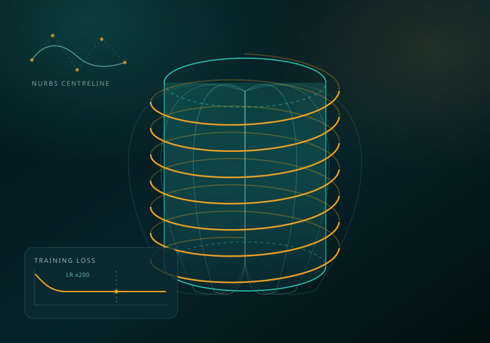

Triasha Sarkar
MS Aerospace Engineering, Georgia Institute of Technology
Aerospace Systems Design Laboratory · Atlanta, GA
About
I build machine learning models for engineering systems, and I test whether they can be trusted. I am finishing an MS in Aerospace Engineering at Georgia Tech, where I work in the Aerospace Systems Design Laboratory on surrogate modeling, uncertainty quantification, and the reliability of large-scale simulation pipelines. Before that I spent eighteen months on airworthiness certification for the Rolls-Royce Trent XWB-84 EP, where a model being wrong was not an academic problem.
Most of my work comes back to one question: when a model produces a number, what would have to be true for that number to mean anything? Answering it usually means building the whole system rather than just the model — ingestion and feature pipelines, an evaluation protocol designed to fail when the pipeline is wrong, a versioned artifact, and a container that serves it.
Focus
Applied machine learning for engineering and scientific systems, with the weight on validation: leakage control, held-out protocols matched to the structure of the data, uncertainty that means what the reader assumes it means, and a serving layer that can reproduce a result outside the process that produced it.
- model validation
- uncertainty quantification
- ML systems & serving
- surrogate modeling
- time-series
- recommender systems
- design of experiments
- scientific computing
Experience
Georgia Tech, Aerospace Systems Design LaboratoryGraduate Research Assistant
2025 – 2026
Alten India, embedded at Rolls-RoyceSystems Engineer · Trent XWB-84 EP airworthiness certification · Bangalore
Oct 2023 – Apr 2025
Education
Georgia Institute of TechnologyMS, Aerospace Engineering
Aug 2026
Cranfield UniversityMSc, Aerospace Vehicle Design · First Class Honours
Feb 2023
SRM Institute of Science and TechnologyB.Tech, Aerospace Engineering
Jun 2021
Projects
2026

NewsLens: leakage-aware news recommendation and search
Chronologically evaluated recommender on Microsoft MIND, served from a checksummed artifact through a containerised FastAPI service. Articles never shown as training candidates score NDCG@10 0.3924 against 0.2740 for the most-exposed band — published as an open question rather than trimmed.
Independent · 2026

Diagnosing silent failures in a 15,120-case simulation study
45% of a solid rocket motor design sweep produced no output and no error message. A naive split scored 99.8% by memorising duplicated geometries; holding out whole geometries gave the honest figure, 96.8% accuracy at AUC 0.986. Traced to an uncapped convergence loop.
Georgia Tech ASDL (AE8900) · May – Jul 2026

An honest equity backtest
Monthly cross-sectional strategy on a strict walk-forward protocol, published with its own negative result: net Sharpe 0.246 at t = 0.813, rising only to 1.072 with costs set to zero. Every specification tested is logged and committed, including the one that looked best.
Independent · Jul 2026

Atlanta mobility resilience digital twin
Road-network model of Atlanta built from OpenStreetMap, simulating disruption scenarios across origin–destination pairs and comparing travel-time and accessibility outcomes under stress. Built with OSMnx, NetworkX and pandas.
Independent · 2026 – present
2025

A training run that looked converged and was frozen
A mesh-free boundary element electromagnetic solver written from the integral formulation through to code, and the operator-learning surrogate trained on its output. That surrogate ran 11 GPU-hours with a loss bit-identical to five significant figures: NaN guards had rewritten an overflow into a finite loss carrying zero gradient.
Independent · Oct 2025 – present

Surrogate modeling, Gaussian processes & operator learning
Gaussian process, response-surface and radial-basis-function surrogates compared across benchmark functions, with multifidelity datasets, POD feasibility and Operator Inference — focused on where each approximation breaks rather than which one wins.
Independent · 2025 – present

GREEN TEA: lifecycle & techno-economic model
Well-to-wake lifecycle and techno-economic model of a forest-residue aviation fuel pathway under parametric uncertainty, benchmarked against GREET, CORSIA and 40BSAF-GREET. The resulting model is in active use by the sponsor.
Georgia Tech ASDL for the U.S. Endowment for Forestry · Sep 2025 – Apr 2026
Leadership
Women of Aeronautics and Astronautics (WoAA), Georgia Tech chapterGraduate Chair
2025 – 2026